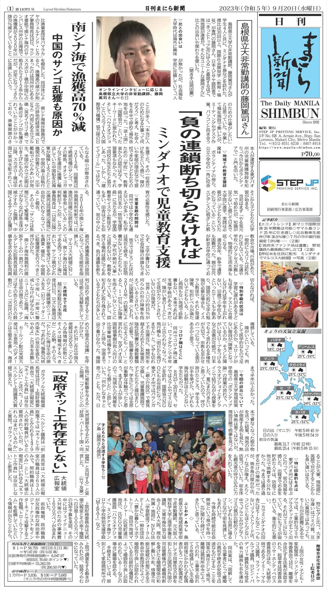

Support of the Students with Learning Difficulties in a Philippines’ Poverty Area
International Conference for Media in Education 2019
Presentations & Media
現場の経験を研究発表や実践報告として共有しています。以下は公開情報で確認できた発表・掲載です。
確認できたものは講演・口頭発表および新聞掲載です。査読論文や著書としてではなく、「研究発表・実践報告」として掲載しています。
Presentations
International Conference for Media in Education 2019
日本教育メディア学会 2019
International Conference for Media in Education 2020
